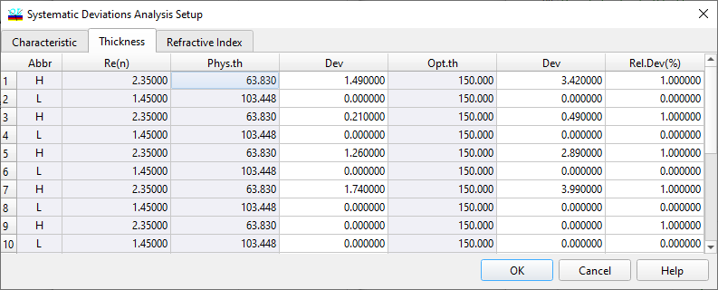

Thickness Error Systematic Deviations Setup
Thickness Error Systematic Deviations Setup
The Thickness page of the Systematic Deviation Setup window allows setting systematic thickness deviations and starting the Systematic Deviations Analysis.
Systematic thickness deviations can be entered in two interconnected ways: as absolute values (Dev columns) and as relative values, i.e., a percentage of the corresponding layer thicknesses (Rel.Dev(%) column). The default values are 1% systematic deviations.

To specify physical thickness deviations, use cells of the column labeled Dev next to the Phys.th. column. To specify optical thickness deviations, use cells in the Dev column next to the Opt.th. column. To specify relative deviations, use cells in the column labeled Rel.Dev(%).

Note: The total deviation of the thickness for every layer is a sum of absolute and relative errors specified in this dialog.
The “Column…” button allows easy access to the Column Editor. It can be used for the sophisticated editing of values for each material separately.
The OK button accepts specified values and starts the Systematic Deviations Analysis procedure. Its results are displayed in the Systematic Deviations window.
See also: